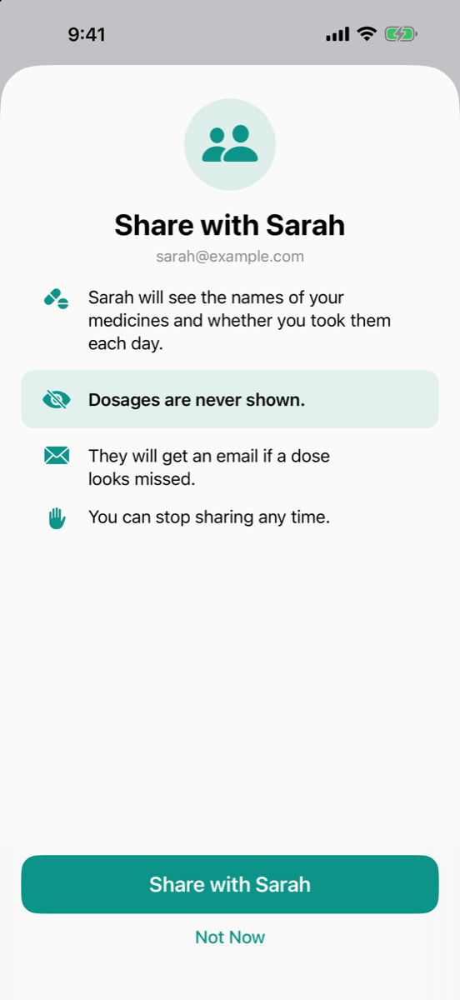

Medicine reminders with one big button.
When a medicine is due, Dose Pop reminds you. One tap on I Took It saves the dose. Large print and plain words, for older adults and the families who help them. $4.99, paid once, no subscription.


Hard to miss. Easy to use.
-
Sounds even on silent
In Settings, turn on Sound Even on Silent and allow it once. Reminders then play when the phone is muted or in a Focus mode, at a volume you choose.
-
A second alert if a dose is missed
If a dose is not marked, a follow up alert comes after a wait you choose. The wait starts at 30 minutes.
-
Answer from the reminder
Tap I Took It, Snooze or Skip right on the reminder. Snooze and Skip work without opening the app.
-
Big buttons, large print
The buttons are large and easy to hit. The words grow with the iPhone text size setting, and the buttons stack when the text is at its largest.
-
A record of every dose
History shows each dose and the time it was taken, so nobody has to guess whether a pill was already taken.
-
A warning before you run out
Enter how many doses you have. When about a week is left, the Today screen says it is time to refill. For a medicine taken as needed, the warning comes at five doses.
-
Any schedule
Every day, two or three times a day, every other day, chosen weekdays, as needed, or every few days, weeks or months.
-
Doses on the Home Screen
Widgets show the day’s doses on the Home Screen and the Lock Screen, without opening the app.
Let one family member keep watch.
Caregiver Alerts stay off until the person taking the medicine turns them on and picks one family member or helper. Nothing is shared before that.
-
They see what was taken
The names of the medicines, and whether each dose was taken that day.
-
Dosages are never shown
They never see how much of each medicine is taken.
-
An email if a dose looks missed
When a dose is still not marked after the wait, they get an email, so they can call and check in.
-
Stop sharing any time
Sharing ends when you choose, and the link they were sent stops working.

Price
Dose Pop is a reminder, not medical advice. Always follow the instructions from your doctor or pharmacist.